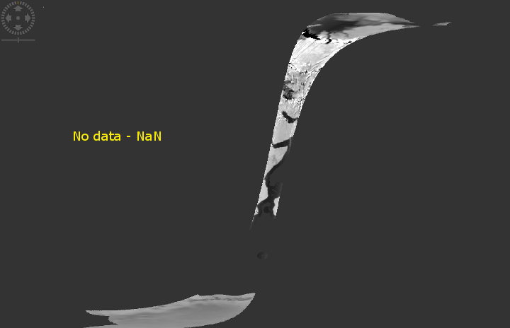
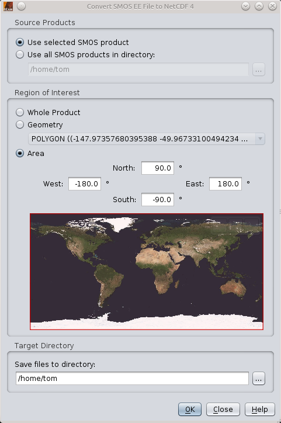

| SMOS NetCDF Conversion | |
The NetCDF Conversion Command can be used to convert the data of
SMOS products in Earth Explorer file format to NetCDF.
This conversion process involves a re-sampling of the data from
the original ISEA hexagonal data cells to a rectangular raster file format.
The export operator supports the following SMOS product types:
The target file format for the conversion process is NetCDF-CF format using a compressed
NetCDF-4 file format. General information about the NetCDF-4 format can be found at
UNIDATA NetCDF (Network Common Data Form)
The CF (Climate and Forecast Metadata) format convention is described at
CF Metadata
The metadata of the original Earth-Explorer file is converted to a CF-compliant metadata record and stored as global NetCDF attribute.
All fields in the SMOS EE grid point data records are represented as single bands on a rectangular pixel raster. The raster is a Plate-Carree projection with a pixel size of 0.02197 degrees in both axes. Each hexagonal ISEA data cell is represented by approximately 30 image pixels for equatorial grid points of the SMOS discrete global grid. For details on the conversion process, please refer to the Data Model description.
The size of the target NetCDF product covers the geometric bounding box of the original SMOS file.
This can lead to large products, especially when the SMOS dataset crosses the anti-meridian. All
pixels not covering a SMOS cell are filled with "NaN" values.
It is highly recommended to use the possibility to create regional subset products. This reduces the
size of the resulting NetCDF file and increases the conversion speed significantly.
The figure below shows a converted MIR_SM_BWSD1C product, band BT_Value_X without any subsetting applied.
It can clearly be seen that most parts of the product contain no data.

The NetCDF Conversion dialog can be invoked from within Visat using the "Tools" menu.
Source Products: Either the SMOS product selected in VISAT, or all SMOS products residing in a directory of the file system can be used for conversion. When a directory is selected, the conversion process will convert all SMOS files in all subdirectories. The software can handle zip-compressed products.
Region of Interest: There are three possibilities for specifying a region of interest (ROI) considered for export:
Target Directory: all output files of the conversion process will be stored in the directory selected.
| Name: | SmosEE2NetCDF |
| Full name: | org.esa.beam.smos.ee2netcdf.ConverterOp |
| Purpose: | Convert SMOS products from Earth Explorer Format to NetCDF4. |
| Version: | 2.3 |
| Name | Description | Type |
|---|---|---|
sourceProduct |
The source products to be converted. If not given, the parameter 'sourceProductPaths' must be provided. | MIR_BW[LS][DF]1C|MIR_SC[LS][DF]1C|MIR_OSUDP2|MIR_SMUDP2 |
| Name | Data Type | Default | Description | Constraints |
|---|---|---|---|---|
sourceProductPaths |
String[] |
|
Comma-separated list of file paths specifying the source products. Each path may contain the wildcards '**' (matches recursively any directory),'*' (matches any character sequence in path names) and '?' (matches any single character). | |
targetDirectory |
File |
. |
The target directory for the converted data. If not existing, directory will be created. | |
region |
Geometry |
|
The geographical region as a polygon-geometry in well-known text format (WKT), i.e. POLYGON((...)). If not given, the bounding box of the data is used. |